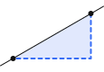
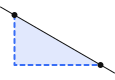
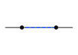
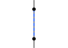

Thursday, August 20, 2026
MATH 18A-38 College Algebra
Introductions
About Me
Lena Pang
BFA in New Media Design + BS in Applied Math + Minor in Japanese @ Rochester Institute of Technology
likes: skiing, Radiohead, tattoos
dislikes: cooked tomatoes, LaTeX
Now your turn!
Share your name, your major, & one of your hobbies.
So... College Algebra.
MATH 18A - College Algebra
3 units
Review of basic algebra. Complex numbers, functions, graphs, polynomials, inverse functions, exponential and logarithmic functions.
Satisfies B4: Mathematics/Quantitative Reasoning.
Prerequisite(s): Math Enrollment Category M-I, M-II, or M-III; or MATH 1 with a grade of C- or better. MATH 1018AS required as a corequisite for Enrollment Categories M-III and M-IV, and recommended for Enrollment Category M-II.
Corequisite(s): MATH 18AW recommended.
Grading: Letter Graded
Practically, useless.
The Real Use
learn how to solve problems: the approach, different strategies, what to do when you’re stumped
practice explaining your own logic
& understanding others’work in groups to improve communication skills
build confidence
My Teaching Philosophy
It is my responsibility to teach you in a way that makes sense to you. I am here to help; I never want you to leave this class feeling ashamed or confused.
It is my responsibility to teach you in a way that makes sense to you. I am here to help; I never want you to leave this class feeling ashamed or confused.
Ask questions.
It is my responsibility to teach you in a way that makes sense to you. I am here to help; I never want you to leave this class feeling ashamed or confused.
Ask questions.
Make mistakes—they help you learn.
It is my responsibility to teach you in a way that makes sense to you. I am here to help; I never want you to leave this class feeling ashamed or confused.
Ask questions.
Make mistakes—they help you learn.
It's okay to forget.
About This Class

Syllabus
my email & office hours (times TBD, in MH 426)
-
course materials:
workbook is available at the campus bookstore ($13.90), try to get it by next class
scientific calculator
homework is online through Canvas (Lumen $35)
paper for warmups
※ If cost is an issue, email or talk to me after class.
15%
Homework — one per class; due before the following test
Test 1
15%
Exams — in person, closed book (except 3×5 notecard & scientific calculator—NO graphing calculators!)
Test 2
20%
Test 3
20%
Final
30%
Test 1
September 15
Test 2
October 15
Test 3
November 17
Final
December 12
SATURDAY!! 4-6pm
Resources & More
Make-Up Credit
up to 10% of your overall grade, caps at 100%
in-class warmups
quizzes (on Canvas, on your own time)
Independent Activities
available on Canvas
Lumen Learning (linked on class home page)
your workbook & lesson keys, uploaded after class
these slides
In-Person Help
my office hours/schedule 1-on-1 time with me
Math Help Lab (MH 426)
In case you missed it...
The final is on a Saturday!
4-6pm on Saturday, December 12.
Do NOT travel before then!
Thursday, August 20, 2026
1.1 Intro to Graphing
Pick a point and describe it to your elbow partner.
\(x\)
\(y\)
Vocab
coordinate plane
or “\(xy\)-plane”
\(x\)
\(y\)
x-axis
y-axis
\((0,0)\)
origin
\((a,b)\)
\(y=b\)
\(x=a\)
ordered pair
Quadrants
\(x\)
\(y\)
\(I\)
\((+,+)\)
\(II\)
\((-,+)\)
\(III\)
\((-,-)\)
\(IV\)
\((+,-)\)
\(x\)
\(y\)
\(A\)
\( (2,3) \)
\(B\)
\( (-4,2) \)
\(C\)
\( (-1,-4) \)
\(D\)
\( (3,-3) \)
\(x\) |
\(y=-\frac{1}{2}x+1\) |
|---|---|
\(-3\) | \(5/2\) |
\(-2\) | \(2\) |
\(-1\) | \(3/2\) |
\(0\) | \(1\) |
\(1\) | \(1/2\) |
\(2\) | \(0\) |
\(3\) | \(-1/2\) |
\(x\)
\(y\)
\(y=-\frac{1}{2}x+1\)
the \(𝒙\)-intercept is where...
the line hits the \(x\)-axis
\(y=0\)
ordered pair is \((\#,0)\)
\(x\)
\(y\)
\((2,0)\)
the \(𝒚\)-intercept is where...
the line hits the \(y\)-axis
\(x=0\)
ordered pair is \((0,\#)\)
\(x\)
\(y\)
\((0,3)\)
Solving for Intercepts
x-intercept \((\#,0)\)
we know \(y=0\) at the \(x\)-intercept,
so we’re looking for \(x\)
set \(y=0\)
solve for \(x\)
y-intercept \((0,\#)\)
we know \(x=0\) at the \(y\)-intercept,
so we’re looking for \(y\)
set \(x=0\)
solve for \(y\)
should say \(\frac{1}{2}x\) instead of \(-\frac{1}{2}x\)
\(x\) |
\(y=\frac{1}{2}x+1\) |
|---|---|
\(-3\) | \(-1/2\) |
\(-2\) | \(0\) |
\(-1\) | \(1/2\) |
\(0\) | \(1\) |
\(1\) | \(3/2\) |
\(2\) | \(2\) |
\(3\) | \(5/2\) |
\(x\)
\(y\)
\(y=\frac{1}{2}x+1\)
\(x\)
\(y\)
\(y=-\frac{1}{2}x+1\)
\(x\)
\(y\)
\(y=-\frac{1}{2}x+1\)
\(y=\frac{1}{2}x+1\)
\(-3\)
\(-2\)
\(-1\)
\(1\)
\(2\)
\(3\)
When you negate \(x\), you swap across the \(y\)-axis
Swap \(1\) with \(-1\),
\(2\) with \(-2\), etc.
the slope \((m)\) is a number that describes the steepness & direction of a line
Slope is read left to right.
rise
run
Slope Types




uphill
downhill
horizontal
vertical
slope
positive
negative
zero (\(0\))
undefined
form
\(\dfrac{+}{+}\) or \(\dfrac{-}{-}\)
\(\dfrac{-}{+}\) or \(\dfrac{+}{-}\)
\(\dfrac{0}{\#}\)
\(\dfrac{\#}{0}\)
4) Graph the line \(y=2x+1\) on the provided grid. Assume each square is 1 unit × 1 unit. Then graph the lines \(y=2\), \(x=-4\), \(y=-\frac{1}{2}x-\frac{3}{2}\).
\(x\)
\(y\)
5) Graph four different lines and write their equations. Draw a positive, negative, zero and undefined slope.
\(x\)
\(y\)
See you next class!
Your to-do’s:
-> 1.1 homework
-> welcome survey
-> buy workbook